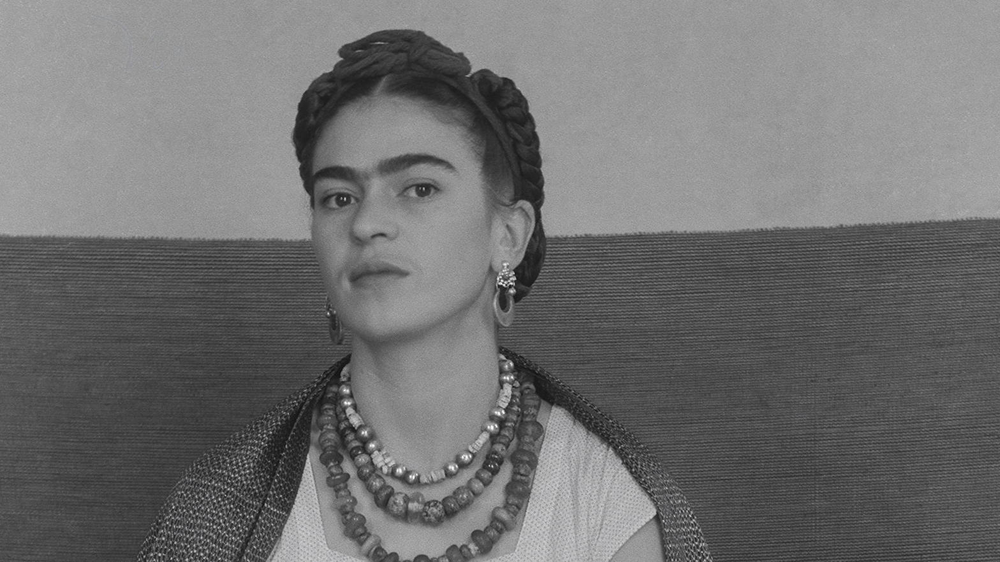

Frida Kahlo
Frida Kahlo was a famous surrealist painter who endured considerable pain despite her fame.
Frida was born in 1907 in Coyoacán, southern Mexico. On September 17, 1925, at 18, Frida was involved in a car accident that broke her spine into three segments. Her cervical vertebrae were shattered, her right leg was severely fractured, and one foot was crushed, while she also lost her ability to bear children forever because of a metal handrail that pierced her lower body. Frida also lost her ability to give birth forever because of the metal handrail plugged into her lower body. Surviving the accident, she began her painting career, resorting to her pain to stabilize her mental state.
About Painting
Frida's paintings are mainly self-portraits, known for her unibrow (left and right eyebrows joined together) and the thin mustache on her lips. One of her most famous paintings, mentioned in class, is Two Fridas, created shortly after Carlo's divorce from her husband, Diego Rivera. She had been drinking all day heavily because of her grief, which made her weaker. In this painting, the two Fridas are connected by a fragile blood vessel, the right one (facing the viewer) wearing a Tehuana dress and holding a miniature portrait of her ex-husband, a symbol of the Frida who loved Rivera. The left one is wearing a European dress (This is a long, stand-up Victorian dress, much like a wedding dress, symbolizing the irreparable nature of marriage) with white lace and holding surgical forceps, the cut blood vessel hanging down and blood dripping on the dress. They are holding hands, relying on the fragile blood vessels to connect to each other. In the background, large dark clouds swirl, creating a depressing atmosphere. It is obvious that the two people in the painting are Frida, but they represent people in different situations. Frida, the painter, used different clothes to express her contradictory and complex inner, Frida's inner loneliness. At this moment, only their understanding of themselves accompanies them.